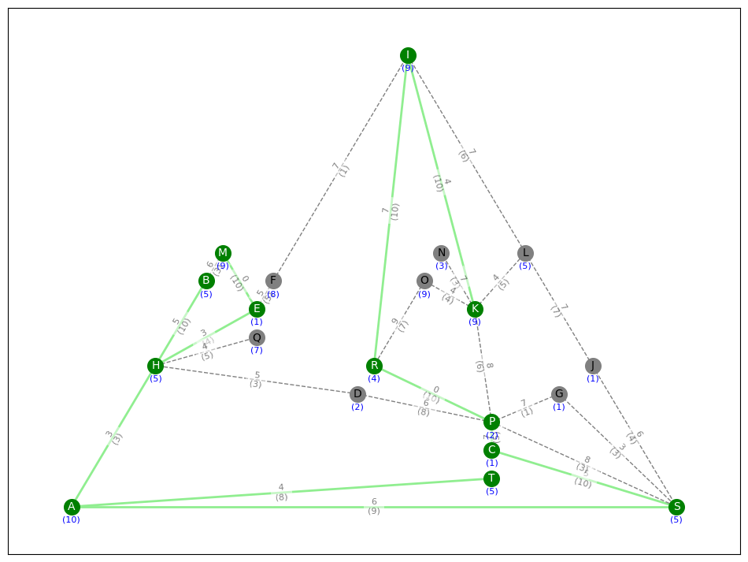
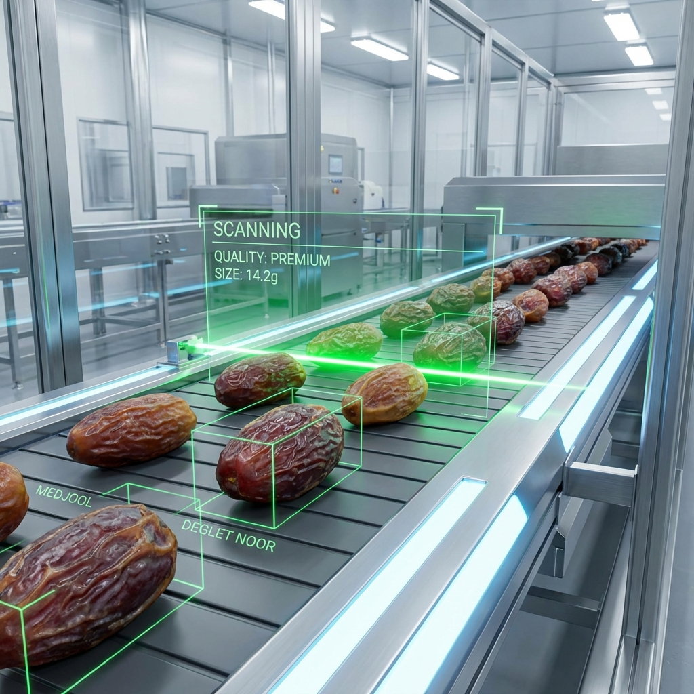
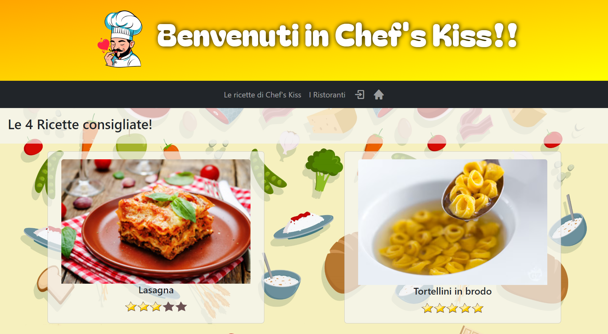
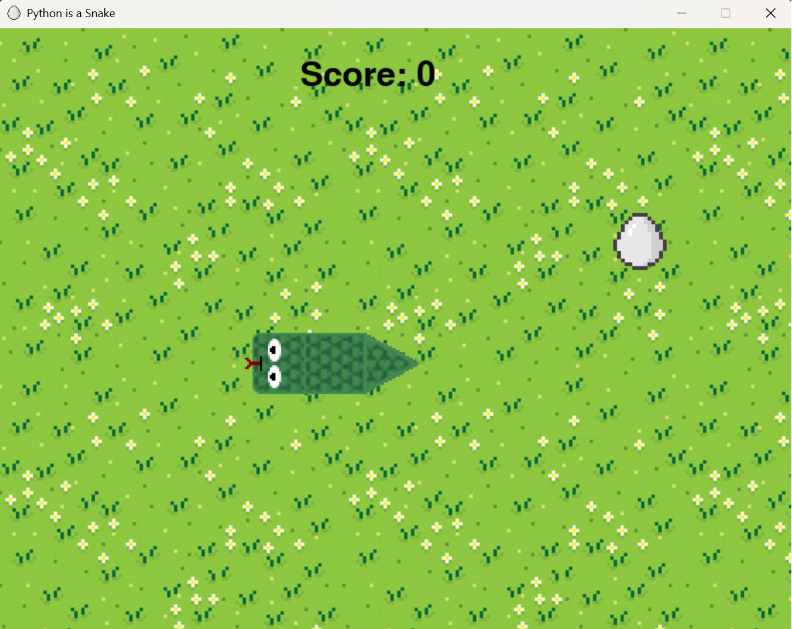

About Me 👨💻
Hello! I'm Davide Negri, a passionate software engineer with a love for coding and exploring new technologies. I enjoy solving problems and finding solutions.
My Accademic Career 👨🎓
I study at UNIFE, Univeristy of Ferrara, at the Department of Engineering, specializing in AI technologies. My expertise includes multiple languages like C, Java and Python, modern frameworks like Spring, and AI specific tools and libraries like TensorFlow. I enjoy collaborating with my teamates and delivering high-quality software for specific use cases.
Certifications & Achievements 🎖️
Claude Developer Foundation
Issuer: Anthropic • Verified via Credly
Certificazione ufficiale che attesta le competenze nello sviluppo e integrazione di applicazioni avanzate con Anthropic Claude: architetture LLM, context management, prompt engineering avanzato, tool calling e progettazione di agentic workflows.
Cybersecurity & Competitions 🛡️
CyberChallenge.IT & Local CTF Competition
Università degli Studi di Ferrara (UNIFE) • Attestato di Partecipazione
Percorso di alta formazione selettivo su sicurezza offensiva e difensiva (Web Security, Crittografia, Software Security & Reverse Engineering, Network Forensics), culminato nella gara finale Capture The Flag locale del nodo di Ferrara.
My Passions 💘
- Coding and learning new tech stuff
- Artificial Intelligence
- Videogames and Gaming in general
- Rock music
Gallery
Explore my projects 🚀

Bicycle Network Design
ResearchOptimization project for urban bike networks using advanced meta-heuristics like LNS and GRASP.
Details
Date Quality Detector
AIComputer Vision system using Transfer Learning to identify quality defects in dates.
Details
Chef'sKiss FoodBlog
Full StackCulinary platform with recipe sharing, restaurant reviews, and reservation management.
Details
Pysnake
Game DevClassic Snake game implementation in Python using Pygame, focusing on game loop mechanics.
DetailsLLaMa2 Search
NLP / AIAdvanced semantic document retrieval system using LLaMa 2 and Elasticsearch.
DetailsWater Safety Decision Support
ML / ResearchMachine-learning tools for water-safety planning, including exploratory analysis, forecasting, and sampling-route planning.
Details
Social Media